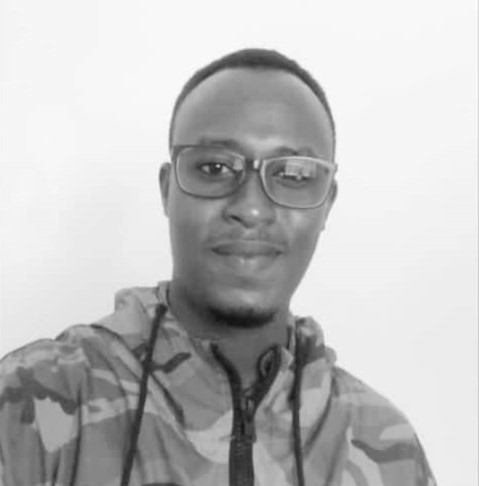

Quick Story Resume

My name is Mbayire Eugene. I'm 32 years old, born in DRC. My mother passed away when I was four. I didn't grow up in a wealthy family, but I was raised with love and courage. I'm currently studying software engineering, while working as a driver since 2017. I married my lovely wife Kayitesi Yvonne in October 2023, and we had our first son, Imena Nganji Mbayire, in March 2024.